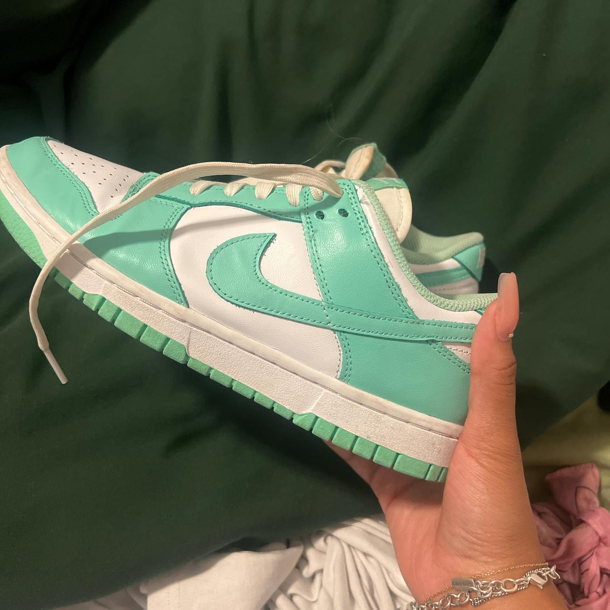

Ultimos objetos encontrados

Objeto 1
Descripción del objeto encontrado.

Objeto 2
Descripción de objeto encontrado.

Objeto 3
Descripción del objeto encontrado.

Objeto 4
Descripción del objeto encontrado.